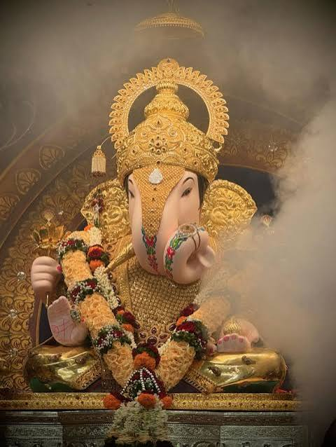

Hello
Dagadusheth Halwai Ganapati Temple
The Dagadusheth Halwai Ganapati Temple is a Hindu temple dedicated to the Hindu god Ganesha (Ganapati) in the city of Pune, India. The temple is visited by over one hundred thousand devotees every year. A large number of devotees visit the temple during the annual ten-day public Ganeshotsav festival.The main Ganesha idol is insured for a sum of ₹10 million (US$100,000). It celebrated 134 years of its Ganeshotsav festival in 2026.
History
Dagdusheth Halwai was originally from the Gokak town in Karnataka[5]. He later moved to Pune, where he became a successful sweet seller (halwai) and a wealthy businessman in the city during the late 1800s. His original halwai shop still exists under the name “Dagdusheth Halwai Sweets” near Datta Mandir in Pune. In the late 1800s, he and his wife Laxmibai lost their only son in a plague epidemic. The grieving couple followed the advice of a sage to build a Ganesh temple in Pune in his memory.[6] Later, Dagdusheth adopted, his nephew Govindsheth (born 1865) who was 9 years old at the time of his death. Govindsheth replaced the first Ganesh idol by a new one, with the first one still being present at Akra Maruti Chowk. A generous man, he established an additional Ganesh idol in a wrestling gym called Jagoba Dada Talim. This talim was owned by Dagdusheth as he was also a former wrestling trainer. One of the chowk (square) in Pune is named Govind Halwai Chowk, after him. Along with his mother, Govindsheth handled all the programmes like Ganesh Utsav, Datta Jayanti and other festivities. The residence where they resided is now known as Laxmibai Dagdusheth Halwai Sansthan Datta Mandir Trust. Laxmi Road in Pune is named after Laxmibai Dagdusheth halwai.[citation needed] Govindsheth died in 1943. His son Dattatray Govindsheth Halwai, born in 1926, was the one who established the third Ganesh idol replacing the second.This idol, known as Navasacha Ganpati, is the one that is present today in the Dagdusheth temple. It proved to be an epoch-making event in Indian history.[according to whom?][7] The temples's Ganeshotsav pandal was not put up for the first time in 128 years, in 2020 due to the COVID-19 pandemic.[8]
The temple is over 100 years old. Jay and Vijay, the two sentinels made of marble catch the eye of all at the outset. The construction is so simple that all the proceedings in the temple along with the Ganesh idol can be seen even from outside. The Ganesh idol is 2.2 metres tall and 1 metre wide. It is adorned with nearly 40 kilos of gold. The temple conducts Daily pooja, abhisheka and the arti of the Ganesh. The temple is illuminated during the Ganesh festival. Shrimant Dagdusheth Ganpati Trust manages the temple. The temple is situated in the centre of city, local shopping market is also the nearby temple. Various cultural activities like music concerts, bhajans, and Atharvasheersh recitation are organized by the trust.[9] He later established the Halwai Ganapati Trust.[10][2] Bal Gangadhar Tilak, during the British Raj, gave a public form to the Ganesh festival celebrations as a way of getting around an order that barred public meetings.[10] Shri Datta Mandir in Budhwar Peth, Pune was the residence of the Halwai family. In Pune, Govind Halwai has a chowk (square) named after him. A replica of the temple was built in Phuket, Thailand.[11]

Shrimant Dagdusheth Halwai Ganpati Mandir is Ganpati Bhavan, 250, Budhwar Peth, Pune, Maharashtra 411002.